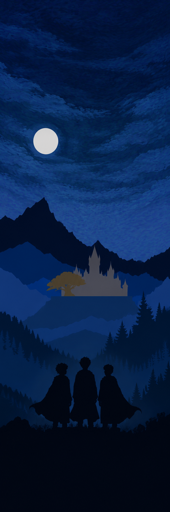
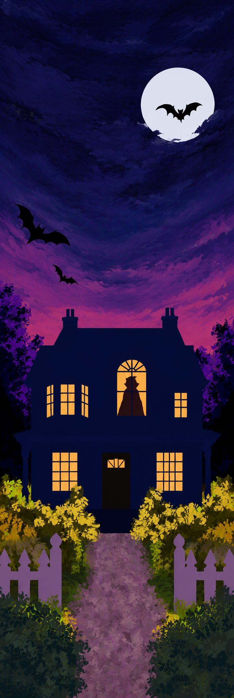
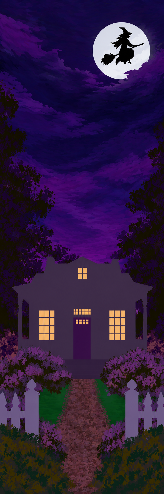

What Lies Beyond the Yew
A moonlit blue mountain valley, the school and three young silhouettes.
Download imageLITTLE KEEPSAKES FOR YOUR NEXT CHAPTER
Three illustrated bookmarks featuring the artwork from my book covers, without the titles or author lettering. Choose your favourites, save the artwork or print a little collection.
Each bookmark prints at 5 × 15 cm. Use A4 paper at actual size (100%), turn off browser headers and footers, then cut around the edges.
3 bookmarks selected.
THE COLLECTION
Familiar artwork, with the lettering removed and the scenes reimagined for a bookmark.

A moonlit blue mountain valley, the school and three young silhouettes.
Download image
A welcoming house, amber windows and bats in a purple evening sky.
Download image
A glowing house beneath a witch flying across the moon.
Download image